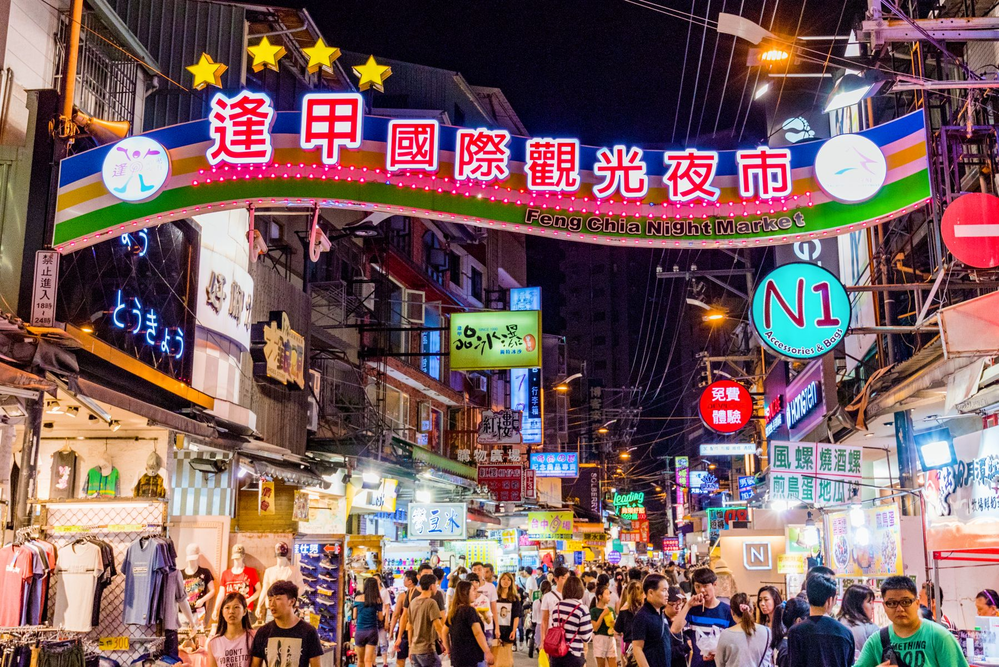
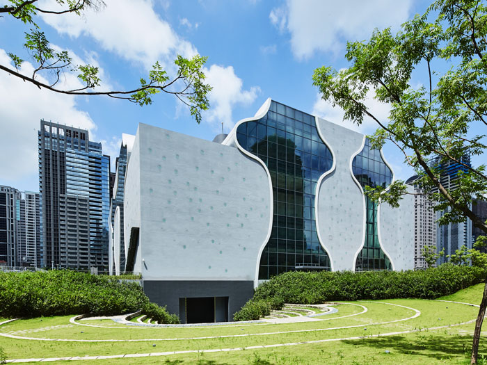
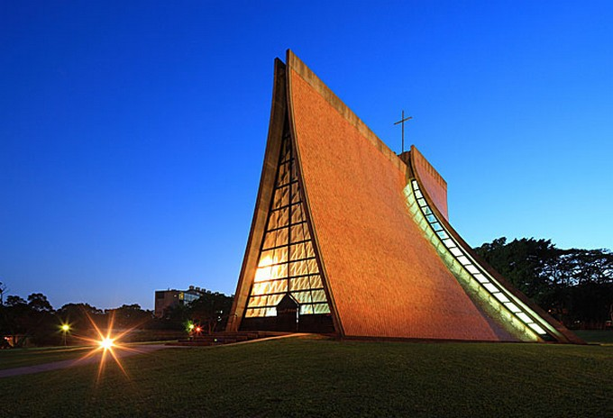
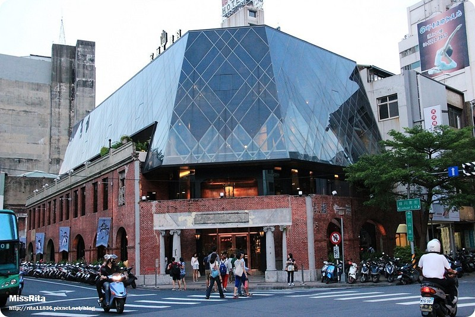
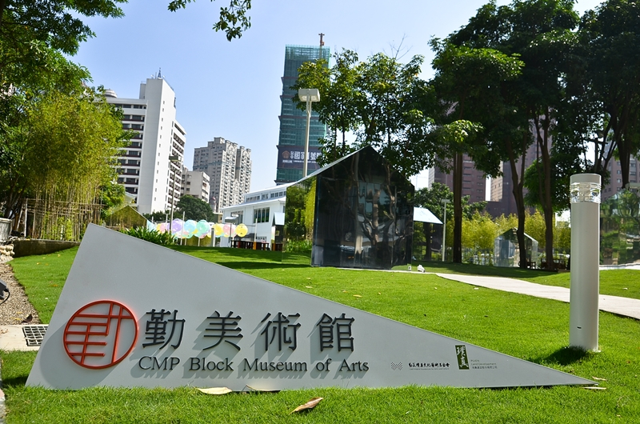
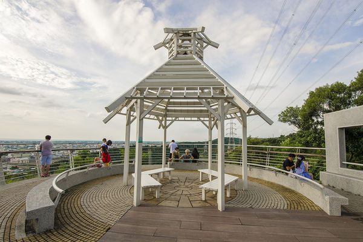

桃園景點

逢甲夜市
臺中著名商圈之一，位於逢甲大學方圓1公里之內，商圈內的小吃讓你讚不絕口，服飾獨具個性、物美價廉

彩虹村
小小的眷村，因為彩虹爺爺充滿童趣的畫作，讓眷村有了新的生命力，近期還多了彩虹溜滑梯，獨特的風格讓眷村更加繽紛豐富

臺中國家歌劇院
繼 1987 年國家兩廳院落成啟用後，睽違近 30 年後第一座開幕的國家級表演場館，它不僅是城市新地標，更象徵文明的跨進

路思義教堂
是一座位東海大學的基督新教禮拜堂，為著名台灣建築師陳其寬與美國華裔建築師貝聿銘之作，於1963年11月2日落成

宮原眼科
日出集團將老建築重新打造，距台中火車站兩分鐘路程，旅人都會買上一份日出乳酪蛋糕、鳳梨酥，和來杯珍珠奶茶和冰淇淋

勤美術館
一個無牆也無疆界的美術館，讓藝術更貼近民眾生活。臨近誠品旗艦店，加上與草悟道串連，共同打造出台中市「街區博物館」

鰲峰山觀景平台
每到假日總會吸引不少民眾前往，加上空氣清新、環境幽靜，是一處臺中適合全家運動休憩的好所在